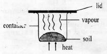
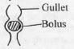
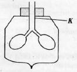
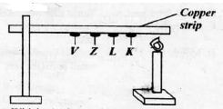
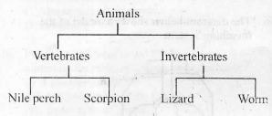

1. Which characteristic of animals apply to all mammals?
2. Which one of the following comprises of the respiratory gases?
3. Which part of the breathing system allows space for expansion of the lungs during breathing in?
4. The following are advantages of weeds. Which one is NOT?
5. A turtle is a reptile which spends most of its life in water. Why do turtles come on land?
6. Carbon dioxide, milk, a metal rod and water were exposed to heat at the same time. Which one expanded most?
7. Malnutrition is also referred to as_______
8. The following are characteristics of matter
(i) Has mass
(ii) Has definite shape
(iii) Has definite volume
(iv) Takes the shape of the container
9. The processes below involve increase and decrease in temperature
(i) Condensation
(ii) Evaporation
(iii) Freezing
10. Why should a raingauge be kept away from trees and buildings? Buildings and trees _____
11. A certain vertebrate has scales on its skin and lives on dry land. Which animal is it MOST likely to be?
12. The following experiment can be used to demonstrate all of the following EXCEPT?
13. The following are sea mammals. Which one is NOT?
14. Heat from the sun reaches the earth by?
15. Below are uses of leaves in plants. Which one is NOT?
16. Pupils in Std 5 collected the following materials for making a weather instrument:
(i) A wooden stand
(ii) A plastic bottle with a cork
(iii) Inner tube of a biro
(iv) Coloured water
(v) Manilla paper
(vi) A clear container
17. What is the function of the villi found on the wall of the small intestines?
18. The experiment below was used to check the components of soil.

19. Which one of the tollowing plants has a fibrous root system?
20. Which of the following pairs of mammals lay egg?
21. Rabbits, mice and squirrels are collectively called?
22. The diagram below shows a certain process in the alimentary canal

23. Roughages prevent ______
24. Which of the following groups consists of foods that are rich in proteins?
25. The chart below represents a simple classification of plants.
26. The temperature at which a substance evaporates is the same temperature at which it?
27. Which of the following is NOT a function of plant roots?
28. The BEST way for a newly manrried couple to prevent HIV infection is by?
29. Juma showed the following signs;
(i) Healthy looking
(ii) Blood tested positive for HIV
(iii) No signs of diseases
30. The experiment below is used to demonstrate that?
31. deficiency diseases can be prevented by?
32. Which one of the following is an edible weed?
33. The amount of rainfall in a given place is measured in?
34. Which pair of animals are cold-blooded and breathe by means of lungs?
35. The size of the particles of soil affects all the following EXCEPT
36. The diagram below shows a model of the breathing system

37. The digestion of food ends in the?
38. Which of the following plants stores food in the stem?
39. The diagram below represents a set up that can be used to demonstrate the transfer of heat in solids

40. Sound travels slowest in ?
41. Which one of the following is a wrong use of medicine?
42. Study the chart below

43. The function of the windvane is to show?
44. Which of the following would require the LEAST heat to change its state?
45. Which of the following body structures is NOT correctly matched with its function?
46. Which one of the following is NOT a rotational method of grazing?
47. A flower which is pollinated by wind is NOT LIKELY to have?
48. The following are oil crops. Which one is NOT?
49. Which physical change occurs in BOTH boys and girls during adolescence?
50. The apparatus below were used to perform an experiment